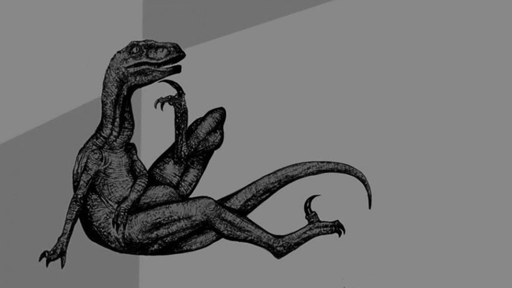
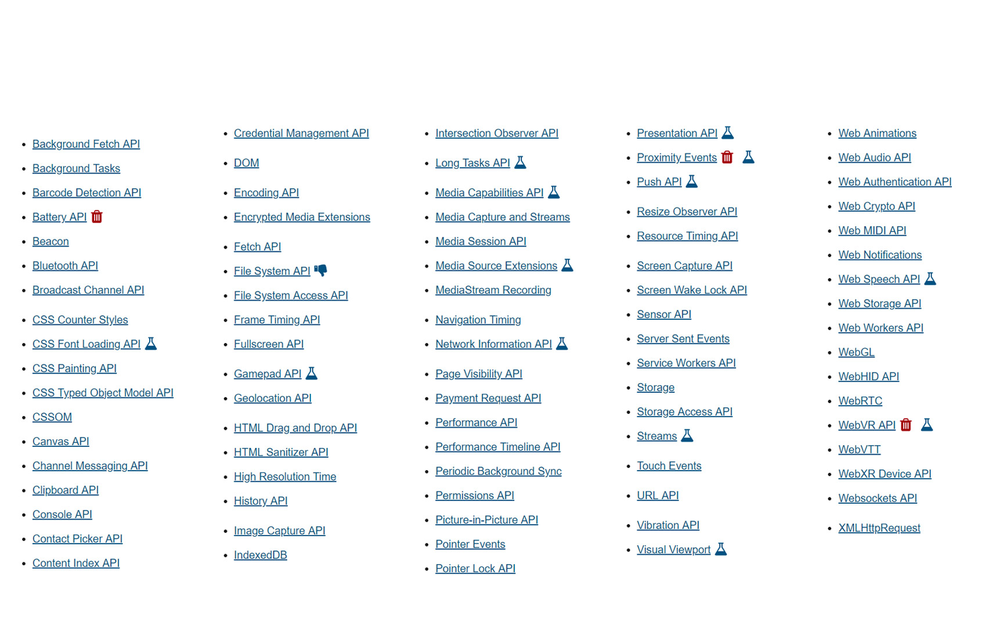

Необычные браузерные API
Необычные браузерные API
Саша Шинкевич (
@neesoglasnaja
)
Кто я?
Верстала ещё на таблицах
jQuery, VanillaJS, AngularJS, React, Angular и Vue.js
И Node.js
Была начальником отдела фронтенда
Выгорела
Пока счастливая безработная
Что же такое эти ваши браузерные API?

Спецификации
Web APIs | MDN

О чем эти спецификации
Манипуляции DOM и стилями
Передача данных и состояние сети
Графика и медиа
Управление устройствами
Хранение и управление данными пользователя
Cостояние браузера и отладка
Манипуляции DOM и стилями
DOM
и
CSSOM
Pointer events
,
Pointer Lock API
и
Touch events
CSS Counter Styles
CSS Font Loading API
HTML Drag and Drop API
Intersection Observer API
и
Visual Viewport API
CSS Houdini:
CSS Typed OM
и
CSS Painting API
Передача данных и состояние сети
URL API
,
XMLHttpRequest
,
Fetch API
и
WebSockets
Service Worker API
:
Content Index API
,
Web Periodic Background Synchronization API
и
Background Fetch API
Server-sent events
и
Beacon API
Broadcast Channel API
и
Channel Messaging API
Streams API
Network Information API
Графика и медиа
Web Animations API
,
Canvas API
,
WebGL
и
WebVR API
WebXR Device API
MediaStream Image Capture API
,
Screen Capture API
,
Barcode Detection API
и
Picture-in-Picture API
Web Audio API
,
Web Speech API
и
Web Video Text Tracks Format (WebVTT)
WebRTC API
:
Media Stream
и
MediaStream Recording API
Media Capabilities API
,
Media Source API
,
Media Session API
и
Encrypted Media Extensions API
Управление устройствами
Geolocation API
Permissions API
Notifications API
и
Push API
Clipboard API
Web Bluetooth API
Battery Status API
,
Proximity Events
и
Sensor APIs
Vibration API
Gamepad API
,
Web MIDI API
и
WebHID API
Хранение и управление данными
Storage API
и
Storage Access API
Web Storage API
и
IndexedDB API
File and Directory Entries API
и
File System Access API
HTML Sanitizer API
,
Encoding API
и
Web Crypto API
Web Authentication API
и
Credential Management API
Contact Picker API
Payment Request API
Cостояние браузера и отладка
Console API
History API
Web Workers API
,
Background Tasks API
и
Long Tasks API
Performance API
:
Performance Timeline
,
Frame Timing API
,
Navigation Timing API
и
Resource Timing API
Page Visibility API
,
Resize Observer API
и
Fullscreen API
Screen Wake Lock API
Presentation API
О чем я не сказала?
Гуддини
WebAssembly
bit.ly/WeAreDevs-frameworks
Саша Шинкевич (
@neesoglasnaja
)